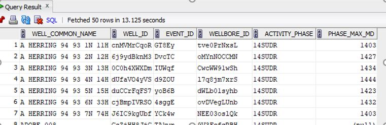
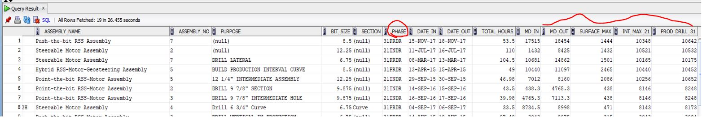

Hole section or op phase is not captured anywhere, so we'll have to do comparisons to determine the correct value for each row. Let's break this into two smaller problems.
- First, let's figure out what the max depths for each hole section (surface, intermediate, production) are per Well.
select w.well_common_name,act.well_id,act.event_id,
act.wellbore_id,act.activity_phase,
ROUND(MAX(act.md_to + NVL(DAT.DATUM_ELEVATION,0)),0) AS PHASE_MAX_MD
from dm_activity act,cd_well w ,CD_DATUM DAT
where w.well_id = act.well_id
AND DAT.WELL_ID = W.WELL_ID
AND (W.USER_DEFINED_1 LIKE '%NM%' or W.USER_DEFINED_1 LIKE '%DEL%' )
AND ACT.ACTIVITY_PHASE LIKE '%14SUDR%'
AND dat.is_default = 'Y'
GROUP BY w.well_common_name,act.well_id,act.event_id,
act.wellbore_id, act.activity_phase
ORDER BY w.well_common_name,ACT.ACTIVITY_PHASE
Below you can see the first few rows of this output.

- This accomplishes our first task of getting the max depth for the surface section, we'll just repeat the process for the intermediate and production.
- In result, this will give us three subqueries to compare against in our main query
- We'll name them sub1, sub2 and sub3, respectively.
SELECT CD_POLICY.customer_name, CD_WELL.api_no,
CD_WELL.loc_county,cd_well.well_id,SUB1.WELL_ID, CD_WELL.well_common_name,
CD_ASSEMBLY.assembly_name,CD_ASSEMBLY.assembly_no,DM_BHA_RUN.purpose, COMP.BIT_SIZE,
----check what hole section this bha is in
case when DM_BHA_RUN.purpose like '%Surface%' or DM_BHA_RUN.purpose like '%surface%' then 'Surface'
when DM_BHA_RUN.purpose like '%Intermediate%' or DM_BHA_RUN.purpose like '%intermediate%' then 'Intermediate'
when DM_BHA_RUN.purpose like '%Production%' or DM_BHA_RUN.purpose like '%production%' then 'Production'
when DM_BHA_RUN.purpose like '%Lateral%' or DM_BHA_RUN.purpose like '%lateral%' then 'Lateral'
when DM_BHA_RUN.purpose like '%Curve%' or DM_BHA_RUN.purpose like '%curve%' then 'Curve' end as Section ,
----compare for phase
case when DM_BHA_RUN.purpose like '%Surface%' or DM_BHA_RUN.purpose like '%surface%' then '14SUDR'
when DM_BHA_RUN.purpose like '%Production%' or DM_BHA_RUN.purpose like '%production%' then '31PRDR'
when DM_BHA_RUN.purpose like '%Lateral%' or DM_BHA_RUN.purpose like '%lateral%' then '31PRDR'
when DM_BHA_RUN.purpose like '%Curve%' or DM_BHA_RUN.purpose like '%curve%' then '31PRDR'
when (DM_BHA_RUN.md_out + nvl(CD_DATUM.datum_elevation, 0)) <= SUB1.PHASE_MAX_MD THEN '14SUDR'
WHEN (DM_BHA_RUN.md_out + nvl(CD_DATUM.datum_elevation, 0)) >= SUB3.PRDR_MIN_MD THEN '31PRDR'
WHEN (DM_BHA_RUN.md_out + nvl(CD_DATUM.datum_elevation, 0)) > (SUB2.PHASE_MAX_MD + 100) THEN '22INDR'
WHEN (DM_BHA_RUN.md_out + nvl(CD_DATUM.datum_elevation, 0)) < (SUB2.PHASE_MAX_MD + 100) THEN '21INDR' end as Phase,
DM_BHA_RUN.date_in, DM_BHA_RUN.date_out, ROUND((DM_BHA_RUN.date_out - DM_BHA_RUN.date_in )* 24,2) AS TOTAL_HOURS,
ROUND(DM_BHA_RUN.md_in + nvl(CD_DATUM.datum_elevation, 0),2) AS MD_IN,
ROUND(DM_BHA_RUN.md_out + nvl(CD_DATUM.datum_elevation, 0),2) AS MD_OUT,
SUB1.PHASE_MAX_MD AS SURFACE_MAX,SUB2.PHASE_MAX_MD AS INT_MAX_21,SUB3.PRDR_MIN_MD AS PROD_DRILL_31
FROM DM_BHA_RUN, CD_ASSEMBLY, CD_WELL, CD_SITE, CD_PROJECT, CD_POLICY, CD_DATUM,CD_BHA_COMP_BIT COMP,
-----SUBQUERY1 - Max depth for Surface section
(select w.well_common_name,act.well_id,act.event_id,
act.wellbore_id,act.activity_phase,
ROUND(MAX(act.md_to + NVL(DAT.DATUM_ELEVATION,0)),0) AS PHASE_MAX_MD
from dm_activity act,cd_well w ,CD_DATUM DAT
where w.well_id = act.well_id
AND DAT.WELL_ID = W.WELL_ID
AND (W.USER_DEFINED_1 LIKE '%NM%' or W.USER_DEFINED_1 LIKE '%DEL%' )
AND ACT.ACTIVITY_PHASE LIKE '%14SUDR%'
AND dat.is_default = 'Y'
GROUP BY w.well_common_name,act.well_id,act.event_id,
act.wellbore_id, act.activity_phase
ORDER BY w.well_common_name,ACT.ACTIVITY_PHASE) SUB1,
-----SUBQUERY2 - Max Depth for Intermediate Section
(select w.well_common_name,act.well_id,act.event_id,
act.wellbore_id,act.activity_phase,
ROUND(MAX(act.md_to + NVL(DAT.DATUM_ELEVATION,0)),0) AS PHASE_MAX_MD
from dm_activity act,cd_well w ,CD_DATUM DAT
where w.well_id = act.well_id
AND DAT.WELL_ID = W.WELL_ID
AND (W.USER_DEFINED_1 LIKE '%NM%' or W.USER_DEFINED_1 LIKE '%DEL%' )
AND ACT.ACTIVITY_PHASE LIKE '%21INDR%'
AND dat.is_default = 'Y'
GROUP BY w.well_common_name,act.well_id,act.event_id,
act.wellbore_id, act.activity_phase
ORDER BY w.well_common_name,ACT.ACTIVITY_PHASE) SUB2,
-----SUBQUERY3 - Max Depth for Production Section
(select w.well_common_name,act.well_id,act.event_id,
act.wellbore_id,act.activity_phase,
ROUND(MIN(act.md_to + NVL(DAT.DATUM_ELEVATION,0)),0) AS PRDR_MIN_MD
from dm_activity act,cd_well w ,CD_DATUM DAT
where w.well_id = act.well_id
AND DAT.WELL_ID = W.WELL_ID
AND (W.USER_DEFINED_1 LIKE '%NM%' or W.USER_DEFINED_1 LIKE '%DEL%' )
AND ACT.ACTIVITY_PHASE LIKE '%31PRDR%'
AND dat.is_default = 'Y'
GROUP BY w.well_common_name,act.well_id,act.event_id,
act.wellbore_id, act.activity_phase
ORDER BY w.well_common_name,ACT.ACTIVITY_PHASE) SUB3
WHERE (CD_POLICY.customer_name LIKE '%NM%' OR CD_POLICY.customer_name LIKE '%DEL%')
AND DM_BHA_RUN.date_in >= '01-JAN-2015' AND CD_ASSEMBLY.well_id = DM_BHA_RUN.well_id AND
CD_ASSEMBLY.wellbore_id = DM_BHA_RUN.wellbore_id AND
CD_ASSEMBLY.assembly_id = DM_BHA_RUN.assembly_id AND CD_WELL.well_id = CD_ASSEMBLY.well_id
AND CD_SITE.site_id = CD_WELL.site_id AND CD_PROJECT.project_id = CD_SITE.project_id AND
CD_POLICY.policy_id = CD_PROJECT.policy_id AND CD_WELL.well_id = DM_BHA_RUN.well_id AND
CD_WELL.well_id = CD_DATUM.well_id and cd_assembly.well_id = cd_datum.well_id and
cd_datum.is_default ='Y' AND CD_ASSEMBLY.ASSEMBLY_ID = COMP.ASSEMBLY_ID AND SUB1.WELL_ID = CD_WELL.WELL_ID
AND SUB2.WELL_ID = CD_WELL.WELL_ID AND SUB3.WELL_ID = CD_WELL.WELL_ID
ORDER BY CD_WELL.well_common_name, DM_BHA_RUN.date_in
- Now that we have the depth of where the BHA ran and the max depth for each hole section, we can see in what section the bha ran in and label it appropriately using the case statements as seen in the code.
- See below for an example of the output.
